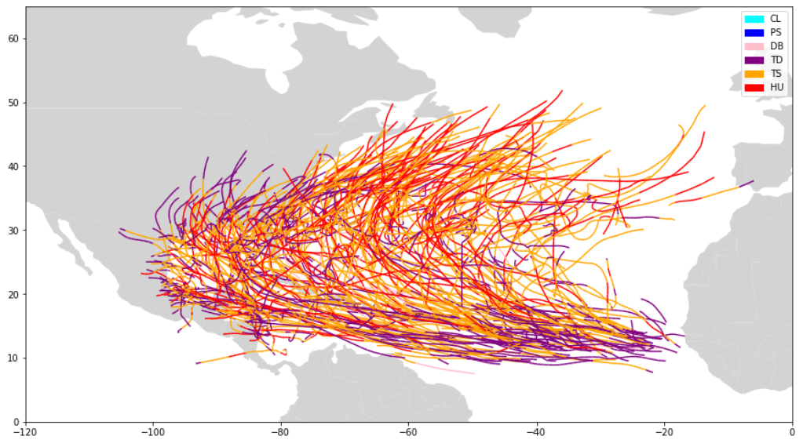
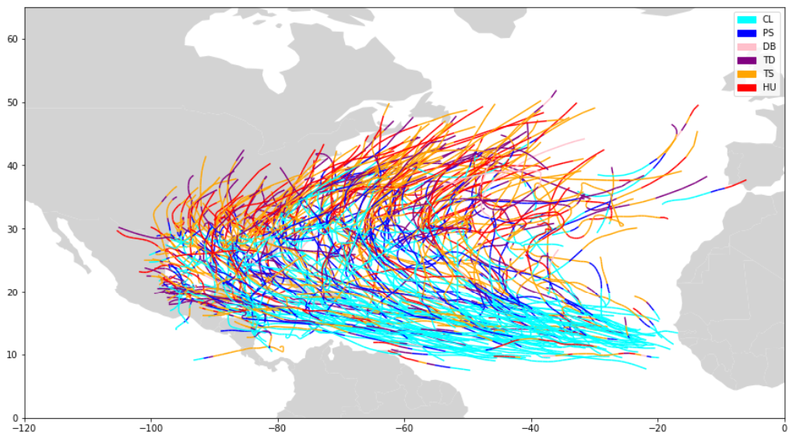

Hurricane AI
Here we train a neural network on satellite images of hurricanes at different stages in their lifespans. We first collect images using hurricane dates from IBTRACS.
Data Collection
We used the IBTRACS database to get the dates of hurricanes in the North Atlanic after 2000.

These storm tracks were extrapolated backwards to get dates for "pre-storm" and "clear" conditions.

The labels in the plots are "CL", "PS", "DB", "TD", "TS", and "HU" for "clear", "pre-storm", "disturbance", "tropical depression", "tropical storm", and "hurricane." Satellite images during these phases will be labeled accordingly and used to train the neural network to recognize these conditions.